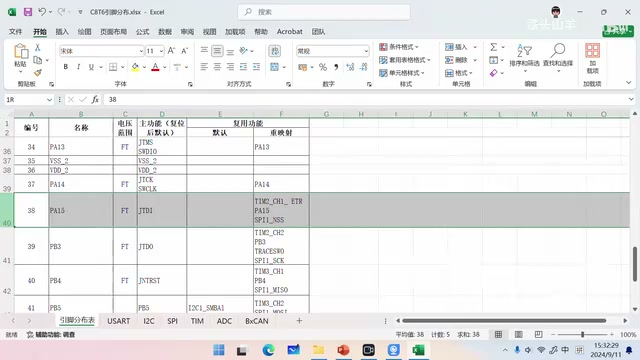
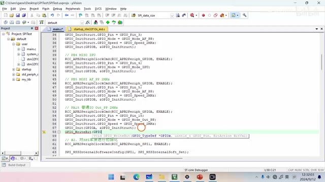
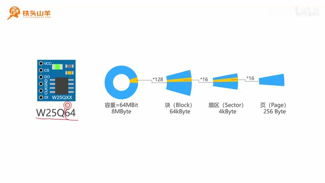
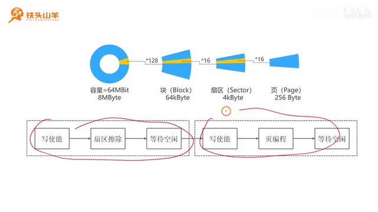
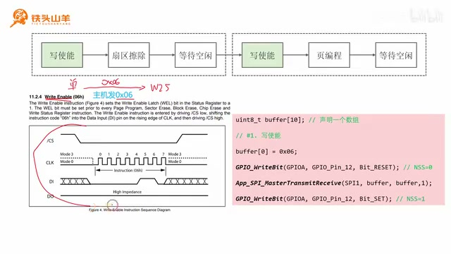
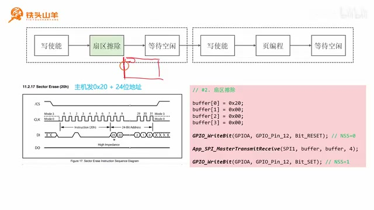
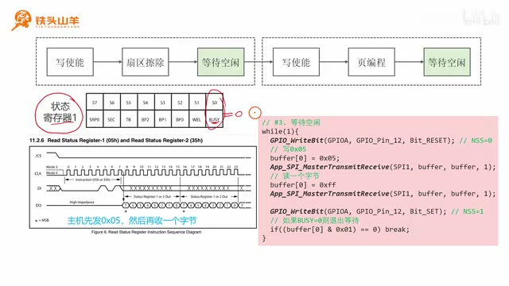
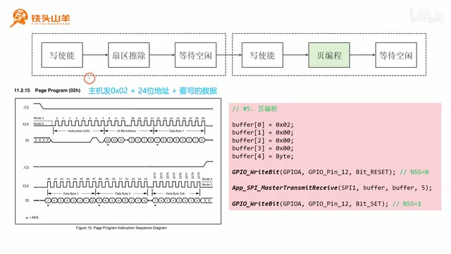
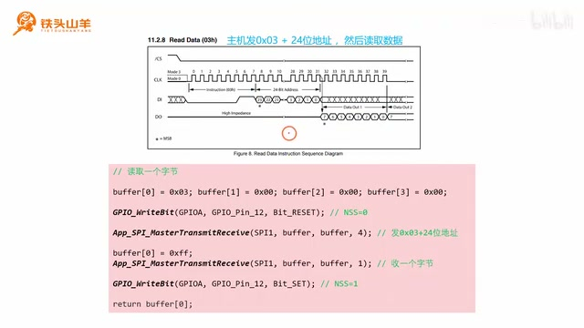
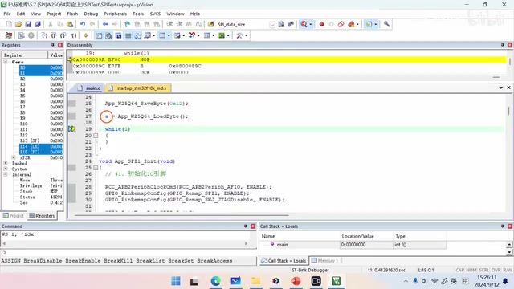

P031 · 5.7 （SPI）W25Q64实验(上)¶
大家好，我是铁头山羊。今天学习第五章第七节，用 W25Q64 模块做一个实验。这个实验内容比较长，分成上下两部分，本期先讲上半部分。课程所需材料都在开发套件包里；购买套件可以获得课程课件和源码，也可以加入答疑群直接交流。
这次实验把 W25Q64 外部 Flash 模块接到单片机上。它像电脑里的移动硬盘一样，用来存储数据；模块和单片机通过 SPI 总线通信。我们要做两件事：先通过 SPI 命令 W25Q64 存一个字节，再通过 SPI 把这个字节读出来。
开始实验前先修正前几期留下的接线设置。此前已经用单片机的 SPI1 连接 W25Q64，并把 SPI1 的 SCK、MISO、MOSI 从 PA5、PA6、PA7 重映射到 PB3、PB4、PB5：SCK 接 PB3，MISO 接 PB4，MOSI 接 PB5。这三根线没有问题。我们还用普通 IO PA15 驱动 W25Q64 的片选 CS：PA15 输出高电平时不选中，输出低电平时选中。
修正 PA15 的复用功能¶

引脚分布表中 PA15 的默认功能标为 JTDI，PB3、PB4、PB5 对应重映射后的 SPI1 引脚。 · 原片 02:55
问题出在 PA15。先打开之前整理的单片机引脚分布表，看“主功能”这一列：它列出复位之后，也就是单片机上电后的默认功能。大部分 IO 引脚上电后可以直接当普通 IO 使用，例如 PA0 到 PA5；而 PA15 默认是 JTAG 调试接口的 JTDI 引脚。它被调试接口占用，不能直接当普通 IO，所以必须重映射。
打开上期的工程，在 default/user 下找到并打开 main.c，定位 App_SPI_Init。第一步初始化 IO 时，给 PA15 添加重映射配置，调用 GPIO 的重映射配置接口；具体配置在下一段接着写。
默认功能写在表格的“复位之后”一列，讨论的是上电即复位后的引脚状态，而不是已经运行初始化程序后的状态。
在 PA15 的初始化位置加入 GPIO_Remap_SWJ_JTAGDisable，并将配置设为 ENABLE，这样就把 PA15 从 JTAG 功能释放出来，作为普通 IO 使用。
PA15 已经选作 W25Q64 的 NSS（片选）信号。初始化阶段还没有和 Flash 通信，因此应先让 NSS 保持高电平，也就是不选中从机。PA15 初始化完成后调用 GPIO_WriteBit 写入 Bit_SET；写 1 就是高电平。
还有一个需要修正的 SPI 参数。我们按 W25Q64 的通信波形选择数据宽度和位序：一次传输一个字节，所以数据宽度是 8 位；先传第 7 位，也就是 MSB，因此选 MSB first。这两项正确。波形资料给出的时钟模式可以是模式 0 或模式 3，我们此前按模式 3 配置；实际试验发现 W25Q64 不支持这里使用的模式 3，需要改回模式 0，即低极性、第一边沿采集。
PA15 输出为高电平表示不选中，输出为低电平表示选中，这个片选电平关系在后续每条命令的开始和结束都要遵守。
回到 App_SPI1_Init，第二步配置 SPI 本身。把时钟极性 CPOL 从高改成低，把时钟相位 CPHA 改成第一边沿采集，于是 SPI 工作在模式 0。

代码编辑器中 PA15 配置为输出，并通过 GPIO_WriteBit 写入 Bit_SET，作为初始未选中的 NSS。 · 原片 05:05
本期分为存储结构、写入数据和读出数据三部分。先在 main.c 顶部声明 App_W25Q64_SaveByte（返回 void）和 App_W25Q64_LoadByte（返回 uint8_t），再在文件末尾实现。
App_W25Q64_SaveByte 接收一个参数，参数就是要保存的数据；App_W25Q64_LoadByte 返回一个无符号 8 位整数，也就是从 W25Q64 读出的字节。先把两个函数原型放到文件顶部，再在文件底部为它们写函数体，具体代码稍后逐步讲。

W25Q64 容量层级图：64 Mbit（8 MByte）分为 128 个 64 KB Block，每个 Block 分为 16 个 4 KB Sector，每个 Sector 分为 16 个 256 Byte Page。 · 原片 09:18
W25Q64 的存储结构¶
W25Q64 是一种 Flash 存储器，断电后数据不会丢失，像电脑硬盘一样。型号中的 64 表示 64 Mbit，即 6400 万 bit。8 bit 是 1 Byte，所以按字节计算容量是 8 MByte，也就是约 800 万字节。
存储空间按层级划分：整个存储器分为 128 个 Block，每个 Block 是 64 KB；每个 Block 再分为 16 个 Sector，每个 Sector 是 4 KB，因此 16 × 4 KB = 64 KB。
每个 Sector 继续分成 16 个 Page，每个 Page 是 256 Byte。W25Q64 的地址空间就是按 Block、Sector、Page 这样逐级划分的。理解这张结构图，后面向 Flash 写数据时会用到。

流程图把写入分成两段：写使能、扇区擦除、等待空闲；再写使能、页编程、等待空闲。 · 原片 11:30
存储流程：先擦除，再编程¶
向普通内存写数据，可以直接把值写进去；Flash 的操作不同。如果要向某片区域写入新数据，必须先擦除原有内容，然后才能写入新数据。擦除旧数据叫“擦除”，写入新数据叫“编程”。整体流程分成擦除和编程两部分：擦除按 Sector 执行，编程按 Page 执行。
为什么擦除按扇区进行？这是 Flash 的工作方式决定的，不能每次只擦一个字节，最小擦除单元就是一个 Sector。
一个 Sector 有 16 个 Page，每个 Page 占 256 Byte，所以 16 × 256 Byte = 4096 Byte，也就是 4 KB。图上从整个存储器一路展开到 Block、Sector、Page；后续写操作会按 Sector 擦除，再按 Page 编程。
后续例子不需要一次写完一页，只借助页编程命令写入当前要保存的一个字节。
写入时也不能把很大一段数据一次性全部写进去。例如写 1 MB，需要分成一小段一小段写；每段以一个 Page 为单位，每次最多写 256 Byte，这就是页编程。
流程图中，擦除和编程各包含三个步骤：操作前写使能，执行擦除或页编程，之后等待空闲。接下来解释为什么要写使能以及怎样等待空闲。
W25Q64 是用来保存数据的存储器，安全性很重要，所以模块内部有一把锁。修改 Flash 内容之前要先打开锁；扇区擦除和页编程都会修改数据，因此执行前都要写使能。操作完成后，模块会自动重新上锁。写使能的作用就是打开这把锁。
扇区擦除和页编程都要花时间：扇区擦除通常约 50 ms，页编程约 10 ms。执行命令后要等待操作完成。W25Q64 的状态寄存器 1（SR1）里有 BUSY 标志位：BUSY 为 1 表示操作仍在进行，为 0 表示操作已经完成。因此“等待空闲”就是反复读取 SR1，直到 BUSY 从 1 变成 0。
到这里，存储步骤已经明确。回到 App_W25Q64_SaveByte，准备按流程依次实现。
保存函数按六步执行：①写使能；②扇区擦除；③等待空闲；④再次写使能；⑤页编程；⑥再次等待空闲。先看第一步写使能。W25Q64 是 SPI 接口的 Flash，需要通过 SPI 总线发送命令。查 W25Q64 手册第 11 章第 2 节 Instructions，在命令列表中找到第 4 条 Write Enable（写使能）。
放大它的波形图：写使能对应发送一个字节 0x06。下面按波形解释如何通过 CS 和 SPI 把这个命令发出去。
波形里 CS 就是 SPI 的 NSS 片选信号，通信期间拉低以选中 W25Q64；CLK 是 SPI 的 SCK 串行时钟，控制通信节奏；DI 对应 MOSI，主机通过它向从机发送数据。波形上的 MOSI 位序是 00000110，即 0x06。主机同时收到的数据这一步不需要，直接丢弃。

Write Enable 波形显示 0x06；右侧代码片段使用 GPIO_Pin_12 控制 NSS。 · 原片 18:15
讲解中用 PA15 表示 NSS；本节投影片的代码调用处显示 GPIO_Pin_12。波形中的 0x06 按 MSB first 发送。
发送写使能命令时，先把片选 NSS 拉低选中 W25Q64，通信结束后拉高取消选中。继续使用上期编写的 App_SPI_MasterTransmitReceive，以主机身份发送并同时接收数据。声明一个长度为 10 的字节数组 buffer，后续还会复用；把 0x06 放入 buffer[0]。调用时第一个参数填 SPI1，第二、第三个参数分别填发送和接收缓冲区，最后一个参数填 1，表示收发一个字节。接收数据也写入 buffer[0]，这里不使用它。
第二步是扇区擦除：写数据前先擦除 Flash 中对应的部分。波形先发送扇区擦除命令 0x20，再发送 24 位扇区首地址。示例把数据写到 0x000400，该扇区首地址也是 0x000400，所以地址拆成三个字节 00 04 00；整条命令共四个字节：20 00 04 00。
代码把命令的四个字节写入 buffer[0] 到 buffer[3]。拉低 NSS 选中从机后，通过 App_SPI_MasterTransmitReceive 发送，再拉高 NSS 取消选中。发送和接收缓冲区都传 buffer；这里只需要发送命令，读回内容不使用。

扇区擦除示例发送命令 0x20 和 24 位地址 0x000400；代码通过 SPI 发送四个字节。 · 原片 23:35
调用 SPI1 收发接口时把 Size 设为 4，表示传输四个字节；发送缓冲区和接收缓冲区都使用 buffer，接收内容不使用。
第三步是等待空闲。扇区擦除和页编程都需要时间，发出命令后要等 Flash 执行完成。状态寄存器 SR1 中的 BUSY 位为 0 表示空闲、操作完成；为 1 表示操作仍在进行，所以程序用循环反复查询，直到 BUSY 从 1 变成 0。
在 W25Q64 手册第 11.2 节的命令列表中，第六条是 Read Status Register-1（读取状态寄存器 1），命令码为 0x05。主机发送 0x05 后，从机返回一个字节，其中包含 SR1 的八个状态位。

SR1 状态位图和 Read Status Register-1 波形旁标出命令 0x05；示例代码循环读取并检查 BUSY 位。 · 原片 26:05
程序用 while 循环查询：拉低 NSS 选中从机，先发送 0x05，再读取一个字节，通信结束后拉高 NSS。发送命令时将 buffer[0] 设为 0x05 并发送 1 字节。读取前把接收缓冲区设为 0xFF，课程解释这样能让读取期间 MOSI 保持高电平；读回的 SR1 放在 buffer[0]。
用 buffer[0] & 0x01 检查最低位 BUSY：结果非零时仍在忙，循环继续；结果为 0 时操作完成，执行 break 退出等待循环。
页编程：写入一个字节¶
第五步是页编程，把要存储的数据写入 Flash。手册中的 Page Program 命令码是 0x02。发送命令码后，再发送 24 位地址；示例把数据写到零地址，所以地址是三个 0x00。地址之后再发送要写入的数据。页最多 256 Byte，本次只保存一个字节，因此只发这一个数据字节。
通信前把 NSS 拉低，结束后拉高。要发送的数据依次是 0x02、三个地址字节和数据本身，总计 5 个字节。
页编程的波形先是 8 位指令，接着 24 位地址，再接数据。和扇区擦除命令相同，地址字段也是三个字节；这里示范往零地址写，因此三字节都为零。页的容量最大 256 字节，示例函数只保存单个字节，所以只发送一个数据字节，不需要填满整页。NSS 拉低后将完整五字节连续传输，再拉高结束本次命令。
页编程的数据区可有多个字节，讲解中的上限是 256 字节；本函数设计成只保存一个字节，所以参数只有 Byte。
页编程中最后一个字节由调用者给定，因此函数不固定保存 0x12，测试时才传入这个示例值。
实现页编程时，先选中 W25Q64，然后准备五个发送字节：buffer[0] 为命令 0x02，buffer[1]、buffer[2]、buffer[3] 为三个地址字节 0x00（表示零地址），buffer[4] 为函数参数 Byte，也就是调用者传进来的数据。调用 SPI 收发接口发送 5 个字节，完成后取消选中。

Page Program 波形及代码显示命令 0x02、三个零地址字节和五字节传输调用；画面中的 NSS 代码使用 GPIO_Pin_12。 · 原片 30:50
至此，页编程操作完成。保存流程第 4 步的写使能复用第 1 步代码，第 6 步等待空闲复用第 3 步代码。
把写使能代码复制到页编程前，把等待空闲代码复制到页编程后，这样 App_W25Q64_SaveByte 的六步就全部完成：写使能、扇区擦除、等空闲、写使能、页编程、等空闲。
从 W25Q64 读出数据¶
第三部分读取数据。与存储相比，读取简单得多，只需一条命令。在 W25Q64 手册第 11.2 节的命令列表中找到 Read Data（读数据，第 8 条）。其命令码为 0x03。主机发 0x03，再发送 24 位目标地址；前面将数据存在零地址，因此地址仍为三个 0x00。发完命令和地址后，就可以通过 MISO 读数据。这里需要读一个字节。

Read Data 波形和代码都显示命令 0x03、24 位地址及后续单字节读取；画面中的 NSS 代码使用 GPIO_Pin_12。 · 原片 36:32
在 App_W25Q64_LoadByte 中，NSS 在两段传输期间保持低电平，结束后拉高。波形中 MOSI 先发送命令和地址；之后主机继续提供时钟，W25Q64 通过 MISO 返回数据。
在 App_W25Q64_LoadByte 中声明 buffer，先把 Read Data 命令 0x03 和 24 位零地址 00 00 00 放入 buffer[0] 到 buffer[3]，通过 SPI 收发接口发送这四个字节。随后把接收缓冲区设为 0xFF，再接收一个字节；读到的数据放在 buffer[0]，作为函数返回值。本例从零地址读取一个字节。
课程说明，这样读起来会更加稳定。至此，保存一个字节的 SaveByte 和读回该字节的 LoadByte 都已写完，接下来测试：先调用 App_W25Q64_SaveByte(0x12) 保存 0x12，再调用 App_W25Q64_LoadByte() 读出。为了方便调试观察，将读到的值赋给全局变量 a。这里用全局变量，是因为若声明一个恰好没有用到的局部变量，调试时可能看不出它的值。
在 main.c 顶部声明全局变量 a 并给它初值 0；在 App_SPI1_Init 后先调用 SaveByte 保存 0x12，再调用 LoadByte 并把返回值赋给 a。
编译代码：按左上角第二个按钮，结果没有错误也没有警告。再按右上角的放大镜进入调试，用单步按钮先执行 App_W25Q64_SaveByte(0x12)，再执行 App_W25Q64_LoadByte()。查看全局变量 a，它的值是 0x12，与刚才存入的字节一致，因此实验成功。

调试器中单步运行保存与读取流程，代码显示先保存 0x12，再调用 LoadByte 读回。 · 原片 40:59
本期先学习 W25Q64 的存储结构，知道它由 Block、Sector 和 Page 分级；随后分别学习了如何向 Flash 存数据，以及如何把存储的数据读出来。上下两部分实验在本期完成一半，下期继续完成实验。感谢大家收看，我是铁头山羊，我们下期再见。